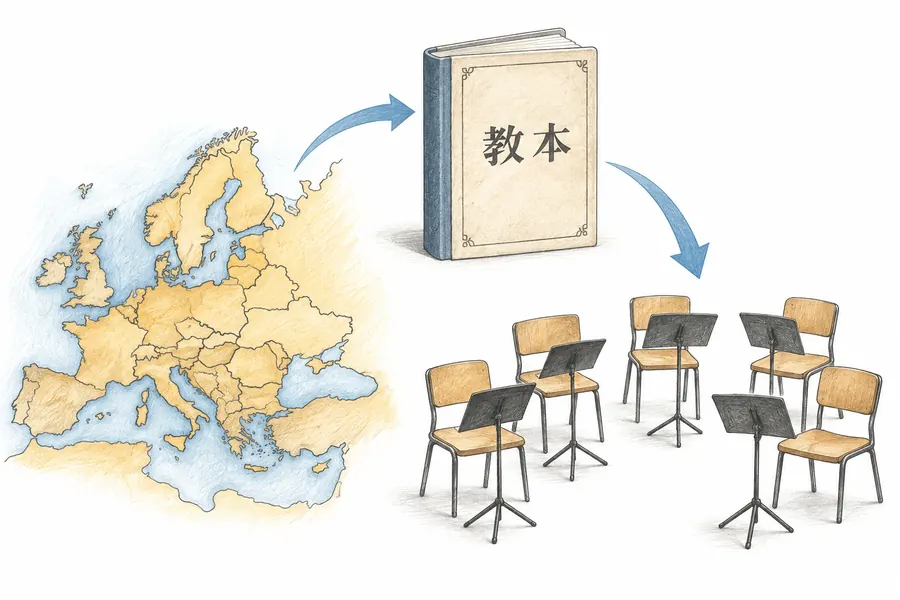
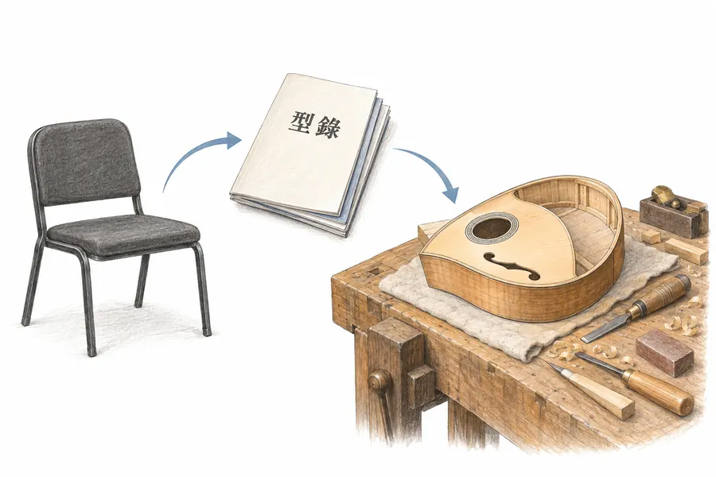
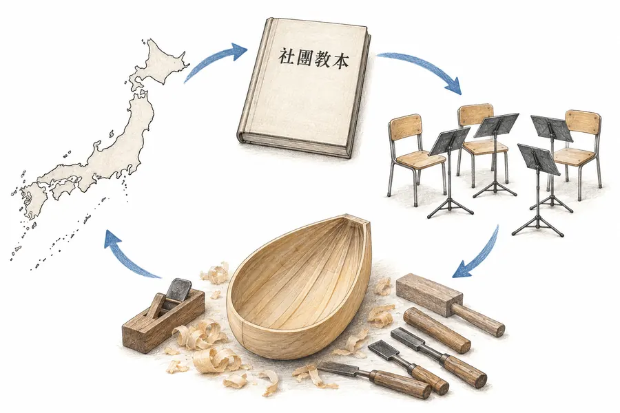
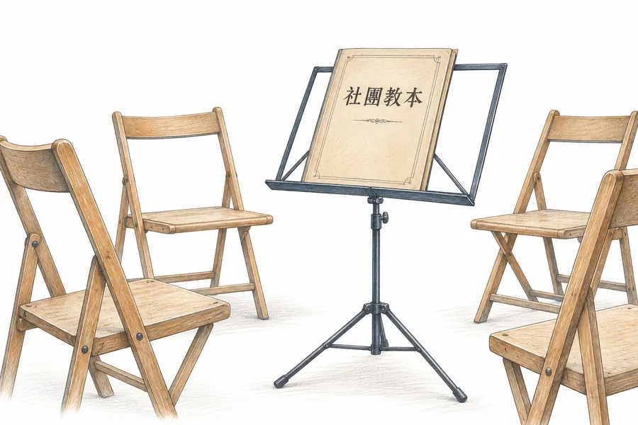
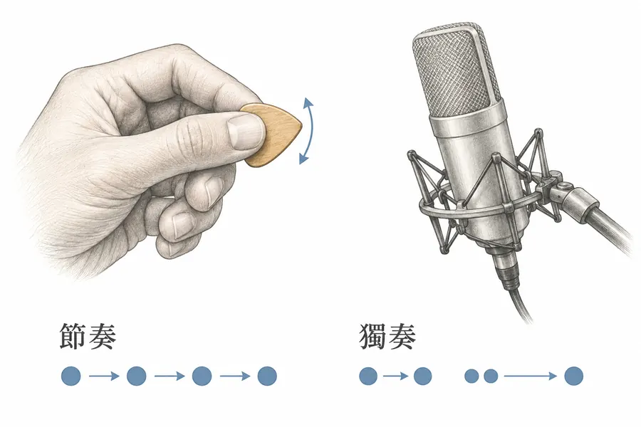
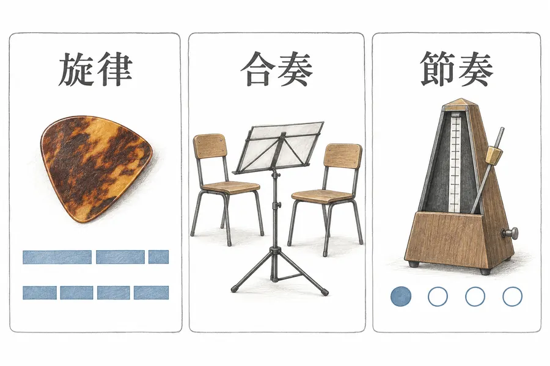

曼陀林的世界傳播
第 4 章・建議學習 1 小時
全球流動：演奏家文化、社團、移民、工業與復興
本章重點
- 十九世紀末以後，曼陀林的歷史不再只是義大利製琴史，而是透過 博覽會、巡演、移民、學校、俱樂部和樂器工業 走向世界。
- 跨國流行需要三個條件同時成立：看得到、學得到、買得到。
- 1880 年美國那場「西班牙學生樂團」巡演，演奏的其實是 bandurria，卻被大眾誤稱 mandolin。商品名稱有時比樂器學分類更快塑造印象。
- 曼陀林每到一個地方，就被分配不同的工作。工作一變，技術和器材就會跟著變。
- 日本把曼陀林做成 學校社團與樂團的長期制度；美國則讓它在 bluegrass 裡長出新生命。
- 沒有一種「最正統的曼陀林」。每一種成熟傳統，都在回答不同的問題。
從義大利製琴史，變成全球文化史
十九世紀末以後，曼陀林的歷史不再只是義大利的製琴史。
它透過博覽會、巡演、移民、學校、俱樂部和樂器工業，進入歐洲、美國、日本與南美。
每到一個地方，又被分配不同的工作：
- 某些地區把它當成 古典合奏家族 的一部分。
- 某些地區把它變成 節奏樂器。
- 某些地方則發展出 大學社團 與大型 mandolin orchestra（曼陀林樂團）。
這些差異的重點，就在於全球化之後的 在地化。
Sparks 的《The Classical Mandolin》把 1878–1892、1892–1918、1918–1945 分成獨立階段，正因為曼陀林的全球擴張並不是單一浪潮。
| 時期 | 發生什麼 |
|---|---|
| 1878 | 巴黎博覽會提供可見度 |
| 1890 年代到第一次世界大戰前 | 形成國際熱潮 |
| 兩戰之間 | 德奧出現新風格、工人組織、各國制度化 |
〔F18〕〔F19〕〔F20〕
4.1 跨國傳播的條件
跨國流行需要 演奏、教學、出版與製造 共同支持。
一件樂器若要從「異國新奇物」變成「大眾活動」，至少需要三種條件：
| 條件 | 怎麼達成 |
|---|---|
| 看得到 | 觀眾先在博覽會或巡演中看見它 |
| 學得到 | 教本、老師與樂譜讓人能學 |
| 買得到 | 製琴工廠、進口商與經銷網路讓人能買 |
十九世紀末的曼陀林，恰好同時具備這三點。
圖解 4.1 跨國傳播的條件（示意）
從「義大利人的樂器」變成「大家的樂器」
1878 巴黎博覽會提供了第一波強烈可見度。
之後，歐洲各地的 circoli（社團） 和 clubs（俱樂部）把個人興趣變成社群活動。
1892–1918 的研究顯示，英國、法國、比利時、德奧、美國、日本與南美都出現大量演奏。
許多地區的團體雖由歐洲人帶領，成員卻已經是 當地人。
這代表曼陀林很快從「義大利人的樂器」，變成可被本地社會吸收的音樂工具。〔F19〕
為什麼學生社團特別重要
這套機制也解釋了為什麼學生社團如此重要。
| 曼陀林的優勢 | 為什麼適合社團 |
|---|---|
| 價格相對大型弦樂器低 | 學生買得起 |
| 演奏門檻比弓弦樂器容易 | 短期內就能產生整齊合奏 |
這特別適合學校、俱樂部和業餘社群。
當社團需要完整音域，mandola（中音曼陀林）、mandocello（低音曼陀林）和低音家族的需求也隨之增加。
「買得到」還牽涉價格層級
當需求從少數貴族或 virtuoso（演奏家），擴大到學生與業餘社團，市場自然會需要不同等級的琴：
| 等級 | 產品樣子 |
|---|---|
| 高階 | 高度裝飾的手工琴 |
| 中低階 | 較標準化、可大量供應的型號 |
這正是後來 美國工廠 與 日本量產體系 能快速成長的背景。
還有一個容易忽略的條件：可攜性
曼陀林比鋼琴、豎琴或大型低音樂器，更容易帶上火車、船與巡演舞台。
移民也能把它帶進新城市。
樂器的尺寸不是單純的設計問題。它會實際影響 文化傳播的速度。
4.2 英國與歐洲的發展
早期研究曾低估十八世紀英國的曼陀林活動。
Sparks 2018 年的新研究找到更多倫敦、Bath（巴斯）、Edinburgh（愛丁堡）的演出與教學證據。
研究顯示，1750 年後已有 Gervasio、Leoné、Merchi 等國際演奏者活躍於劇院、音樂會，甚至娛樂場合。〔F17〕
換句話說，英國更準確地說，是 早期曾有一波較上層、較專業化的流通。
十九世紀末的差別：規模與制度
十九世紀末的差異，在於 規模和制度。
1892–1918 的歐洲曼陀林文化不只靠 virtuoso，而是有：
- 社團
- 出版社
- 工廠
- 樂團
法國、比利時、德國、奧地利都形成自己的教學和合奏傳統，並逐漸產生與義大利 tremolo 美學不同的 技法偏好。〔F19〕

圖解 4.2 英國與歐洲的發展（示意）
所以，「傳入」最好不要講單一年份
因此談「傳入」最好避免單一年份。
多數國家可能早已有零星的樂器和表演。真正值得分期的是：何時開始形成持續的社會網路？
這個觀念同樣適用日本與美國。
兩波全球化的差別
十八世紀英國的案例，讓我們看見「第一波全球化」和十九世紀末的差別：
| 第一波（十八世紀） | 第二波（十九世紀末） | |
|---|---|---|
| 主要靠 | 巡演 virtuosi（演奏名家）、城市上層娛樂、專業教學 | 印刷、俱樂部、製造業、移民社群共同放大 |
| 規模 | 有限 | 大得多 |
相同國家，可以在不同世紀經歷 完全不同型態 的曼陀林流通。〔F17〕
常見誤解：找到某國最早的文獻紀錄，就以為找到了「該國曼陀林史的起點」。
其實：「最早出現」和「形成持續傳統」是兩個不同的問題。
真正影響今天演奏文化的，往往是 後者。
4.3 美國曼陀林熱潮
Met 對美國歷史的敘述非常有戲劇性。
1880 年，一群 Spanish Students（西班牙學生樂團） 在美國巡演。
他們演奏的其實是 bandurria（班杜里亞琴），但公眾與媒體常把它誤稱為 mandolin。
義大利音樂家很快利用這股熱度，以 真正的曼陀林 組成類似團體巡演，進一步推高市場。
這個「誤認」的重點在於說明：商品名稱有時比樂器學分類更快塑造大眾印象。〔F09〕

圖解 4.3 美國曼陀林熱潮（示意）
移民把技術帶進城市製造業
1880–1920 之間，美國大量進口義大利曼陀林，也吸引南義製琴師移民紐約。
Angelo Mannello 是典型例子。
Met 一件 1900 年的作品顯示，他在紐約建立了高度裝飾的圓背曼陀林生產。
館方記錄其工廠在二十世紀初曾雇用多達 七十五名 製作者與裝飾工。〔F21〕
Mannello 的工廠資料，也讓「移民文化」有了具體的產業尺度。
當工廠能雇用數十名製作者與裝飾工時，產品的 一致性、分工與銷售方式 都和單人工坊不同。
美國 mandolin craze（曼陀林狂熱）因此不只創造樂團，也創造了 職業與供應鏈。〔F21〕
另一條路：Gibson 的重新設計
同時，美國本土也開始質疑「為什麼曼陀林一定要做成圓背」。
Orville Gibson 的 1898 專利與實物，代表另一條路：
- 雕刻拱面
- 尾弦板
- 浮動琴橋
- 一體式結構
- hollow neck（中空琴頸）
美國市場因此同時存在兩股力量：
| 路線 | 內容 |
|---|---|
| 移植 | 那不勒斯傳統的圓背琴 |
| 重新設計 | Gibson 的 carved-top |
最後才長出 A-style（A 型）、F-style（F 型）與 bluegrass 的連結。〔F10〕〔F11〕
注意：後來哪一種和特定音樂風格連結，是 市場、演奏者和品牌共同選擇 的結果。
不是技術上必然的勝負。
4.4 日本的教學、社團與製琴
日本曼陀林史同樣不宜只靠一個「傳入年」概括。
日本曼陀林連盟的歷史資料顯示，1994 年曾以 「本邦渡来100年」（傳入日本一百年）舉辦紀念活動。
這反映日本曼陀林圈長期把 1894 前後 視為一個象徵性起點。
另一方面，二十世紀初的教學、社團和本土製造，才真正讓樂器進入穩定發展。〔F23〕

圖解 4.4 日本的教學 社團與製琴（示意）
製造端：證據很清楚
Suzuki Violin（鈴木小提琴製造）的官方年表記錄：1906 年開始製造販售曼陀林。
這代表日本在很早期就不只進口樂器，而是建立了 本土供應。
後來產品線不只標準 mandolin，也包括 mandola 和 mandocello。
2017 型錄仍可看到 M-30、M-100、MD-4、MD-10 和 MC-836，呈現日本合奏文化對 完整家族 的需求。〔F25〕〔F26〕
社團文化：把樂器變成長期教育制度
| 組織／事件 | 時間 | 意義 |
|---|---|---|
| 明治大學曼陀林倶樂部的創立 | 1923 | 之後持續以定期演奏會方式活動 |
| 日本曼陀林連盟成立 | 1968 | 把獨奏比賽、資料蒐集、研究會和國際交流制度化 |
〔F22〕〔F24〕
日本的特色因此不只是「很喜歡圓背曼陀林」，也包含 把合奏與學校社團建立成持續一世紀的文化。
供給與曲目互相促進
日本案例還顯示：「完整家族」與「大型合奏」會互相強化。
當學校與社會團體長期演奏 orchestra repertoire（樂團曲目），製造商便有理由提供不同音域。
反過來，能穩定買到 mandola、mandocello，又讓編曲者敢寫更完整的聲部。
這是一個供給和曲目互相促進的循環。〔F22〕〔F26〕
1894 這個數字要怎麼理解
同時，1894 作為「本邦渡来100年」的象徵性起點，應該理解為 日本曼陀林圈自身的紀念框架。
更早的相關樂器紀錄仍可另行研究。
歷史紀念日和最早實物證據，是不同類型的主張。本書會分開表述。〔F23〕
4.5 兩次世界大戰之間
第一次世界大戰後，十九世紀末那種「國際時髦樂器」的光環開始退去。
但這不等於曼陀林消失。
Sparks 對 1918–1945 的研究顯示：
- 德國與奧地利出現新的演奏風格。
- 曼陀林也被工人與社會主義組織採用。
- DMGB、DAMB 等團體（原文只給縮寫，未展開全名）把撥弦樂團變成 集體文化活動 的一部分。〔F20〕

圖解 4.5 兩次世界大戰之間（示意）
同一件樂器，四種身份
法國則走向另一種制度化：巴黎 Conservatoire National（國立音樂院） 一度設有 mandolin class（曼陀林班）。
義大利的政治環境又有不同影響。
換句話說，同一件樂器在不同國家，可能同時是：
| 身份 | 例子 |
|---|---|
| 工人合奏 | 德奧的 DMGB、DAMB |
| 專業教育 | 法國國立音樂院 |
| 家庭娛樂 | 各國的家庭與業餘社群 |
| 民族文化 | 與地方形象結合 |
這也是全球史最值得保留的複雜性。
低潮替戰後分流埋下伏筆
從長期看，這段低潮替戰後的分流埋下了伏筆：
| 地區 | 戰後走向 |
|---|---|
| 德國、日本等地 | 古典 mandolin orchestra 繼續發展 |
| 美國 | 曼陀林在 string bands（弦樂團）與 bluegrass 中取得新生命 |
它的重點不是「樂器消失了」，而是 原本的大眾熱潮分裂成多種較專門的生態。〔F12〕
為什麼工人組織值得注意
戰間期的德奧工人組織特別值得注意，因為它把曼陀林從「時髦休閒」轉成 群體身份工具。
DMGB、DAMB 的存在顯示，樂團可以承擔：
- 教育
- 社交
- 階級文化
而不只是演奏會。
這種社會功能，往往比某一位明星演奏家更能讓樂器 跨世代存活。〔F20〕
兩種合法化，方向其實一樣
同一時期，法國 Conservatoire National 設 mandolin class，則是另一種 合法化：樂器進入專業教育框架。
兩者看似方向相反——一個是工人團體，一個是國家音樂院。
其實它們都說明同一件事：曼陀林已能被制度吸收，而不再只靠短期流行。〔F20〕
4.6 美國戰後音樂的轉變
Smithsonian 收錄 Walter Carter 的《The Mandolin in America》時，把美國史概括成五個階段：
- golden age（黃金時代）
- 衰退
- bluegrass roots（藍草根源）
- Monroe
- modern revival（現代復興）
這個分類很有啟發性：曼陀林並沒有因為 1920 年代的大眾熱潮退去而消失，而是 換了工作。〔F12〕

圖解 4.6 美國戰後音樂的轉變（示意）
Bluegrass 改變了曼陀林的「身份」
在 bluegrass 裡，曼陀林不再以古典式長 tremolo 為主要身份。
Bill Monroe 建立的語言強調：
- 強烈的 chop（短促有力的切分和弦）
- 清楚的切分
- 穿透力高的 solo（獨奏）
樂器在樂團裡同時扮演兩個角色：
| 角色 | 怎麼做 |
|---|---|
| 節奏 | 像 snare drum（小鼓）一樣補反拍 |
| 主奏 | 和 fiddle（小提琴）、banjo（斑鳩琴）競爭旋律 |
這種角色改變，也反過來影響美式 F-style、f-hole（f 型音孔）與 setup 的偏好。
1980 年代以後：邊界又打開了
1980 年代以後的復興，又把邊界打開。
Carter 的歷史涵蓋：
- jazz（爵士）
- klezmer（克萊茲梅爾）
- Irish（愛爾蘭）
- choro（簫羅）
- classical connection（與古典的連結）
- 各種 bluegrass 分支
常見誤解：今天談「美式曼陀林」，以為就等於 Monroe-style（孟羅風格）。
其實：這同樣是過度簡化。真正的特色是美國市場長期容許 不同設計與風格並存。〔F12〕
Bluegrass 如何反向影響器材
Bluegrass 對器材的反向影響尤其明顯。
當演奏者要在 banjo、fiddle、guitar（吉他）和人聲之間取得清楚的節奏位置，下面這些條件會變得重要：
- 快速起音
- 強烈中頻
- 可立即停止的和弦
這種需求和古典式長 tremolo 的優先順序不同。
因此，同一把曼陀林在 setup、撥片與右手阻尼（damping） 上，會出現不同偏好。
現代跨界：再一次鬆動邊界
現代跨界則再次讓這些邊界鬆動。
同一位演奏者可能：
- 用 carved-top 彈 Bach（巴哈）
- 也用 octave mandolin（八度曼陀林）彈 Celtic（塞爾特音樂）
- 再以 pickup（拾音器）進效果器
這重點在於：二十一世紀的市場，讓演奏者能 自由重新組合傳統。〔F12〕
4.7 各地傳播模式的比較
理解全球曼陀林最有效的方法，是問一個問題：
每個地方把曼陀林放在哪個音樂位置？
| 地區／傳統 | 曼陀林的工作 |
|---|---|
| 義大利那不勒斯傳統 | 歌唱旋律、圓背工藝 |
| 德奧與日本的大型撥弦樂團 | 完整聲部家族的一員 |
| 美國 bluegrass | 節奏與獨奏的雙重角色 |
| 大學社團 | 群體音樂教育的工具 |

圖解 4.7 各地傳播模式的比較（示意）
工作一變，技術和器材就會變
| 需求 | 變得重要的能力／規格 |
|---|---|
| 需要長旋律 | tremolo 與 sustain（延音）控制 |
| 需要反拍 | chop 與快速 damping |
| 需要樂團中音 | mandola 的 tuning、notation（記譜）與弦長 |
| 需要大量學生 | 穩定量產與維修性，比華麗手工裝飾更實際 |
所以，本書不會選出「最正統的一種曼陀林」
這也解釋了為什麼本書不會選出「最正統的一種曼陀林」。
歷史上每一種成熟傳統，都在回答不同的問題。
專業比較的工作，重點在於 先把問題說清楚。
該比較哪些欄位？
如果把不同地區放在同一張表裡，比較欄位應該是：
| 比較欄位 | 為什麼重要 |
|---|---|
| 主要社會場景 | 決定樂器被賦予什麼任務 |
| 典型編制 | 獨奏、社團或樂團 |
| 常見型制 | 圓背、carved-top、flatback 等 |
| 核心右手語法 | tremolo、chop、damping 等 |
| 教育方式 | 師徒、學校社團或音樂院 |
而且要 配合年代 一起比較。
這樣才看得出一些細微的差別。
例如日本和德國同樣重視 orchestra，卻有不同組織史。美國和義大利都重視 solo，卻形成不同伴奏與琴體偏好。
這也能防止文化刻板印象
這種比較方式，也能防止文化刻板印象。
不是所有義大利演奏都只用 tremolo，也不是所有美國人都只彈 bluegrass。
地區傳統是理解脈絡的 起點，不是限制個別演奏者的 標籤。
自我學習題庫

學習檢查：作答、核對、複習
先自己作答，再看答案。答錯時回到本章相關小節重新讀一次。
1. 十九世紀末美國曼陀林熱潮的重要背景之一是？
- A. Spanish Students 巡演與媒體誤稱
- B. 電吉他發明
- C. 錄音串流
- D. 爵士鼓出現
2. 樂器傳到不同國家後常會？
- A. 完全保持原用途
- B. 依當地音樂重新分配角色
- C. 失去所有傳統
- D. 變成同一種尺寸
3. 日本曼陀林文化的重要場域之一是？
- A. 大學社團與樂團
- B. 只有街頭演奏
- C. 只有歌劇院
- D. 只有教會
答案：1.A 2.B 3.A
本章主要查證來源

查證來源：找原文、核條件、留紀錄
| 編號 | 來源與用途 |
|---|---|
| 〔F09〕 | The Metropolitan Museum of Art，From Naples to New York，Guitar Heroes exhibition essay。那不勒斯製琴環境、美國移民、Spanish Students 與美國 mandolin craze。 |
| 〔F10〕 | United States Patent Office / Google Patents，US598245A – Mandolin, Orville H. Gibson，Patented 1898-02-01。Orville Gibson 一體式 rim/neck/head、carved top/back 與 hollow neck 的原始專利。 |
| 〔F11〕 | The Metropolitan Museum of Art，Mandolin, Orville Gibson, 1898，Met 2015.643a–c。與 1898 專利設計一致的現存實物。 |
| 〔F12〕 | Smithsonian Libraries and Archives，Walter Carter，The Mandolin in America，2017 catalog record。美國曼陀林熱潮、衰退、bluegrass 與現代復興的歷史脈絡。 |
| 〔F17〕 | Paul Sparks，The mandolin in Britain, 1750–1800，Early Music 46(1), 2018。18 世紀英國曼陀林演奏、教學與社會文化的新研究。 |
| 〔F18〕 | Paul Sparks，1878–1892, The Classical Mandolin，Oxford University Press, 2005。1878 巴黎博覽會、義大利 circoli mandolinisti 與再流行。 |
| 〔F19〕 | Paul Sparks，1892–1918, The Classical Mandolin，Oxford University Press, 2005。歐洲、美國、日本、南美的 virtuoso era 與全球流行。 |
| 〔F20〕 | Paul Sparks，1918–1945, The Classical Mandolin，Oxford University Press, 2005。德奧新演奏風格、工人組織、法國教育與戰間期變化。 |
| 〔F21〕 | The Metropolitan Museum of Art，Mandolin, Angelo Mannello, New York, 1900，Met 1972.111.2a,b。義大利移民在紐約建立圓背曼陀林工廠與美國量產案例。 |
| 〔F22〕 | 一般社団法人 日本マンドリン連盟，日本マンドリン連盟 official site，accessed 2026-10-06。1968 成立、研究／比賽／國際交流等日本制度化發展。 |
| 〔F23〕 | 日本マンドリン連盟 関西支部，日本マンドリン連盟について／沿革，historical page。1994 年「マンドリン本邦渡来100年」紀念活動等組織歷史。 |
| 〔F24〕 | 明治大学マンドリン倶楽部紫紺会，明治大学マンドリン倶楽部の歴史，accessed 2026-10-06。1923 創立與日本大學曼陀林文化案例。 |
| 〔F25〕 | 鈴木バイオリン製造，年表，accessed 2026-10-06。1906 年開始製造販售曼陀林等日本製造史料。 |
| 〔F26〕 | 鈴木バイオリン製造 / Suzuki Music，2017 string-instrument catalog，2017。M-30、M-100、MD-4、MD-10、MC-836 等日本家族規格與弦長。 |
連結：
- 〔F09〕https://blog.metmuseum.org/guitarheroes/from-naples-to-new-york-mobile/
- 〔F10〕https://patents.google.com/patent/US598245A/en
- 〔F11〕https://www.metmuseum.org/art/collection/search/700485
- 〔F12〕https://www.si.edu/object/mandolin-america-full-story-orchestras-bluegrass-modern-revival-walter-carter:siris_sil_1091895
- 〔F17〕https://academic.oup.com/em/article-abstract/46/1/55/4907922
- 〔F18〕https://academic.oup.com/book/10241/chapter-abstract/157932074
- 〔F19〕https://academic.oup.com/book/10241/chapter-abstract/157933927
- 〔F20〕https://academic.oup.com/book/10241/chapter-abstract/157939527
- 〔F21〕https://www.metmuseum.org/art/collection/search/504480
- 〔F22〕https://www.japanmandolinunion.com/
- 〔F23〕https://jmu.xii.jp/kansai/renmei.htm
- 〔F24〕https://www.mumc-ob.jp/history/
- 〔F25〕https://www.suzukiviolin.co.jp/about/factory/
- 〔F26〕https://www.suzuki-music.co.jp/app/uploads/2017catalog14.pdf